Alur 1 · Operasional harian
Urutan frame sesuai urutan kerja di lapangan.
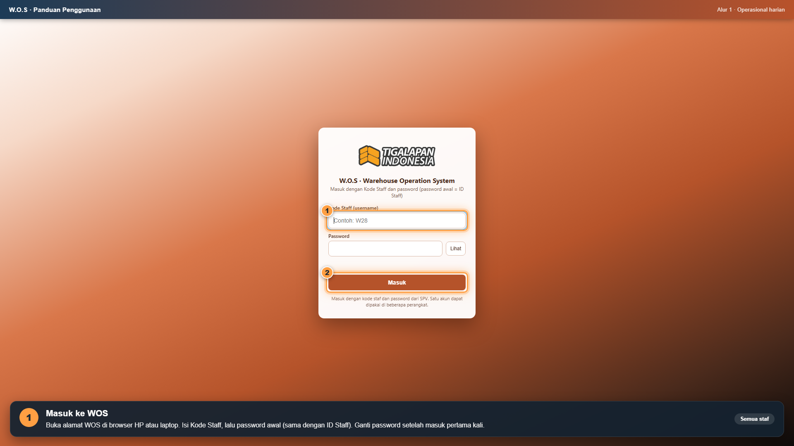
Masuk ke WOS
Buka alamat WOS di browser HP atau laptop. Isi Kode Staff, lalu password awal (sama dengan ID Staff). Ganti password setelah masuk pertama kali.
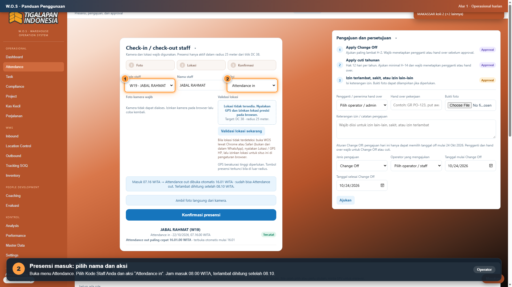
Presensi masuk: pilih nama dan aksi
Buka menu Attendance. Pilih Kode Staff Anda dan aksi “Attendance in”. Jam masuk 08.00 WITA, terlambat dihitung setelah 08.10.

Ambil foto dan validasi lokasi
Foto kamera wajib (tanpa galeri). Lokasi harus berada dalam radius 25 meter dari DC 38. Nyalakan GPS dan izinkan lokasi di browser.

Konfirmasi presensi
Setelah foto dan lokasi valid, tekan “Konfirmasi presensi”. Kamera menutup otomatis. Salah foto? Minta SPV membatalkan presensi agar bisa mengulang.
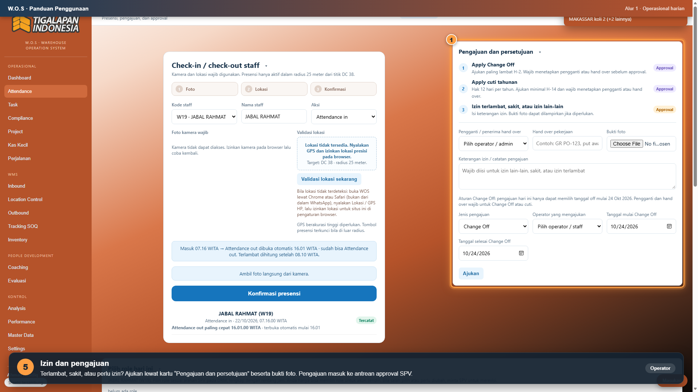
Izin dan pengajuan
Terlambat, sakit, atau perlu izin? Ajukan lewat kartu “Pengajuan dan persetujuan” beserta bukti foto. Pengajuan masuk ke antrean approval SPV.

DRM: centang semua yang ikut briefing
Setelah briefing pagi, SPV membuka Alokasi role harian. Tekan “Centang semua”, lalu silang (✕) hanya staf yang tidak ikut. Yang disilang otomatis tercatat di Compliance.

Bagikan role per rentang jam
Pilih role, jam mulai, dan jam selesai untuk tiap staf, lalu “Tambah”. Satu staf boleh punya beberapa role di jam berbeda. Staf yang sudah hadir bisa memilih role sendiri.

Laporan 5R harian
Mulai pukul 15.45 WITA, buka Compliance dan pilih area. Rekam video (disarankan) atau ambil foto area kerja. Kirim sebelum 18.00 WITA supaya tidak tercatat terlambat.
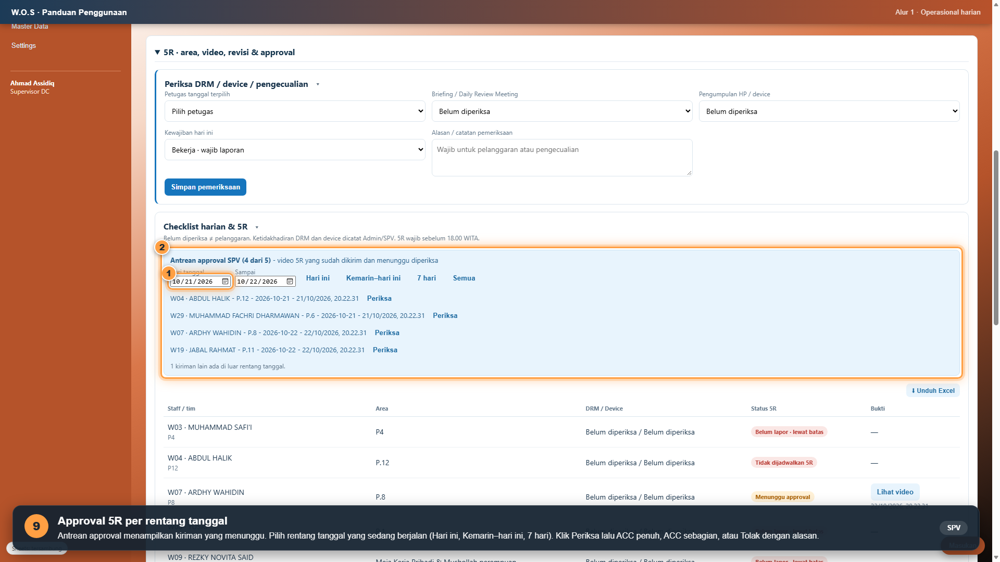
Approval 5R per rentang tanggal
Antrean approval menampilkan kiriman yang menunggu. Pilih rentang tanggal yang sedang berjalan (Hari ini, Kemarin–hari ini, 7 hari). Klik Periksa lalu ACC penuh, ACC sebagian, atau Tolak dengan alasan.

Hasil approval masuk ke Task operator
Hasil ACC, ACC sebagian, atau Tolak dikirim sebagai tugas baru ke akun operator, lengkap dengan alasan dan R yang belum memenuhi. Operator membaca dan memperbaikinya.
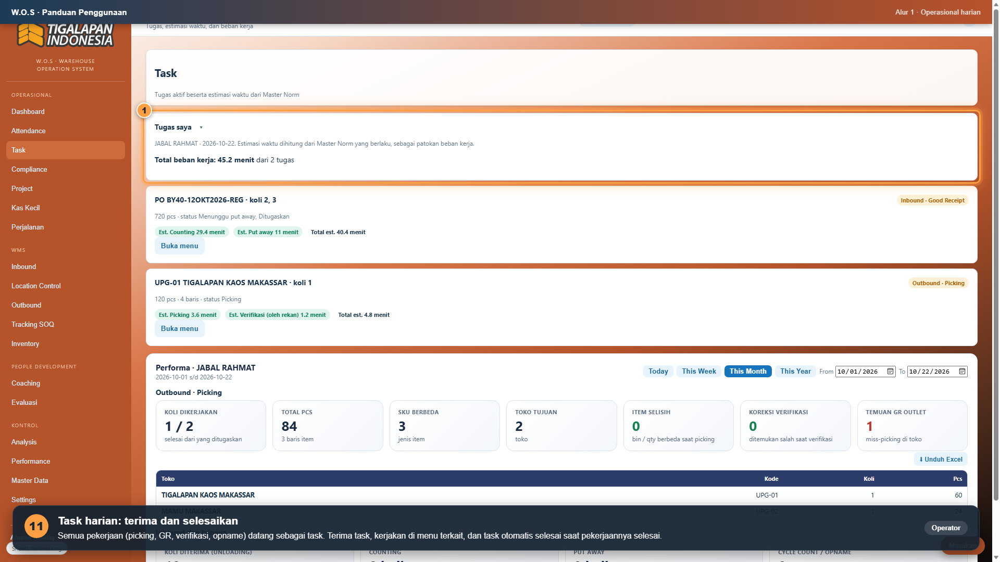
Task harian: terima dan selesaikan
Semua pekerjaan (picking, GR, verifikasi, opname) datang sebagai task. Terima task, kerjakan di menu terkait, dan task otomatis selesai saat pekerjaannya selesai.
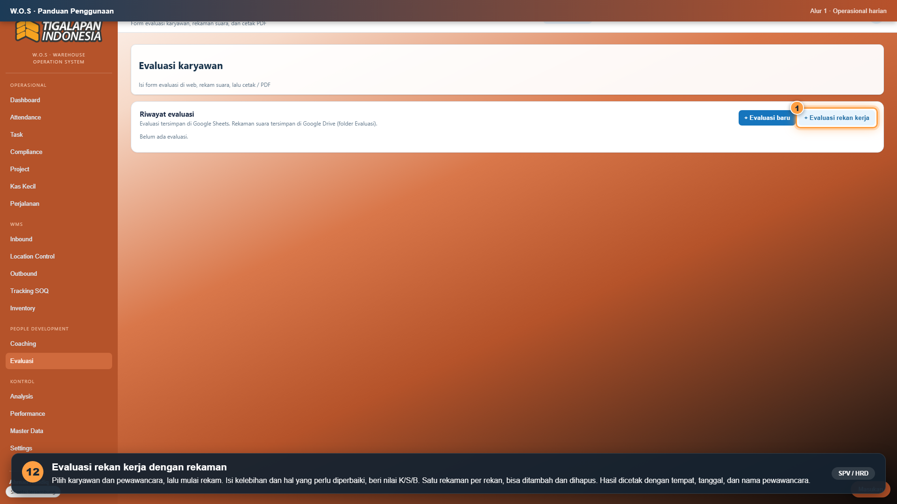
Evaluasi rekan kerja dengan rekaman
Pilih karyawan dan pewawancara, lalu mulai rekam. Isi kelebihan dan hal yang perlu diperbaiki, beri nilai K/S/B. Satu rekaman per rekan, bisa ditambah dan dihapus. Hasil dicetak dengan tempat, tanggal, dan nama pewawancara.
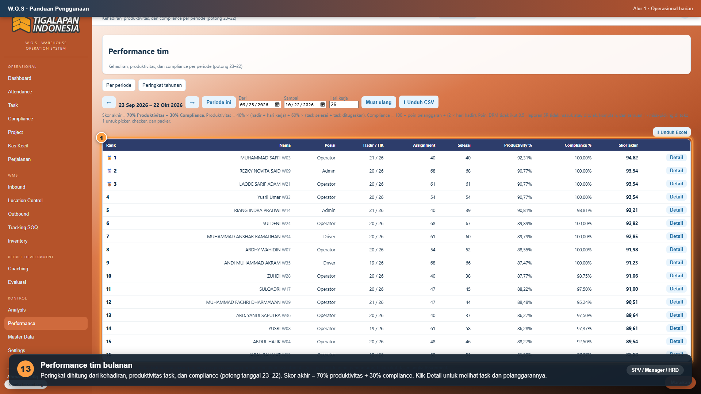
Performance tim bulanan
Peringkat dihitung dari kehadiran, produktivitas task, dan compliance (potong tanggal 23–22). Skor akhir = 70% produktivitas + 30% compliance. Klik Detail untuk melihat task dan pelanggarannya.
Alur 2 · Inbound dan stok
Urutan frame sesuai urutan kerja di lapangan.
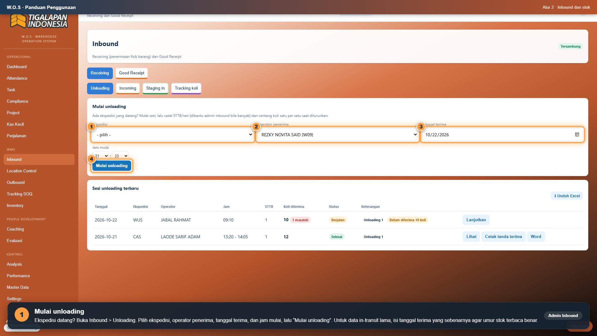
Mulai unloading
Ekspedisi datang? Buka Inbound > Unloading. Pilih ekspedisi, operator penerima, tanggal terima, dan jam mulai, lalu “Mulai unloading”. Untuk data in-transit lama, isi tanggal terima yang sebenarnya agar umur stok terbaca benar.
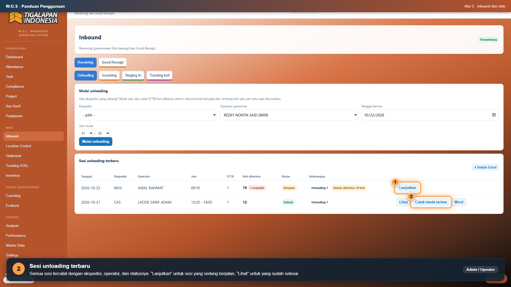
Sesi unloading terbaru
Semua sesi tercatat dengan ekspedisi, operator, dan statusnya. “Lanjutkan” untuk sesi yang sedang berjalan, “Lihat” untuk yang sudah selesai.
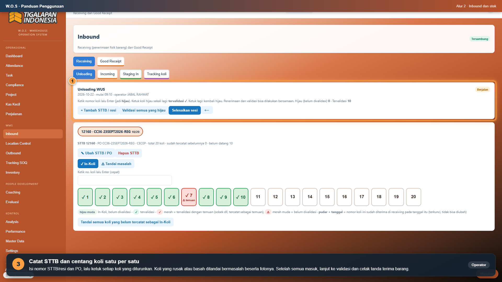
Catat STTB dan centang koli satu per satu
Isi nomor STTB/resi dan PO, lalu ketuk setiap koli yang diturunkan. Koli yang rusak atau basah ditandai bermasalah beserta fotonya. Setelah semua masuk, lanjut ke validasi dan cetak tanda terima barang.
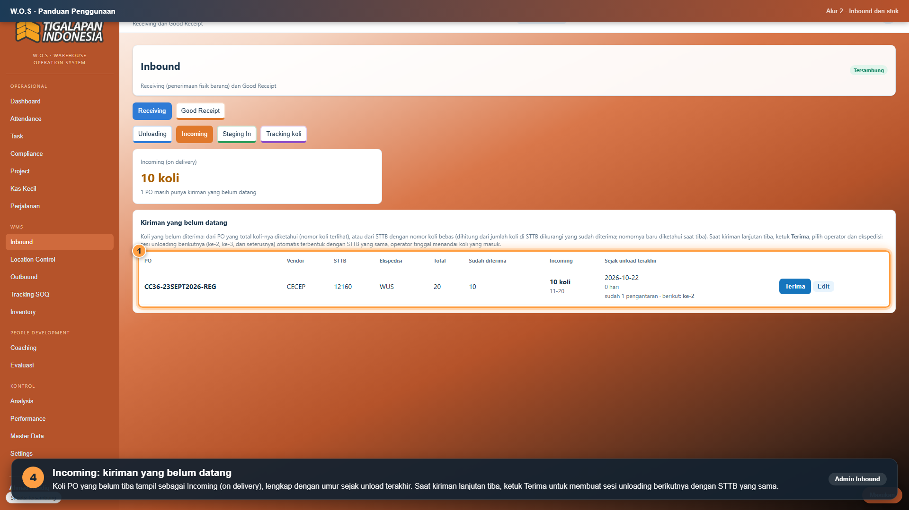
Incoming: kiriman yang belum datang
Koli PO yang belum tiba tampil sebagai Incoming (on delivery), lengkap dengan umur sejak unload terakhir. Saat kiriman lanjutan tiba, ketuk Terima untuk membuat sesi unloading berikutnya dengan STTB yang sama.
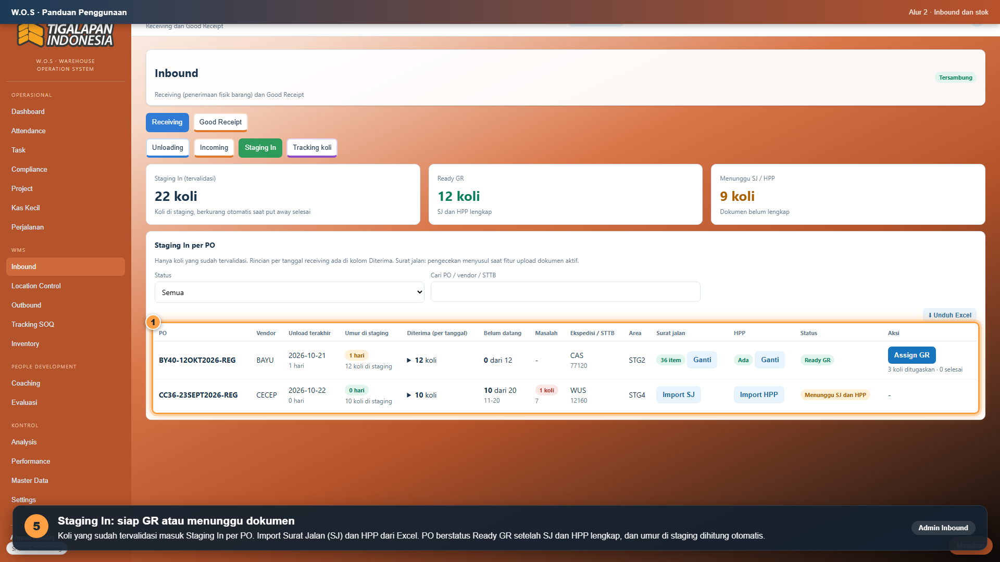
Staging In: siap GR atau menunggu dokumen
Koli yang sudah tervalidasi masuk Staging In per PO. Import Surat Jalan (SJ) dan HPP dari Excel. PO berstatus Ready GR setelah SJ dan HPP lengkap, dan umur di staging dihitung otomatis.
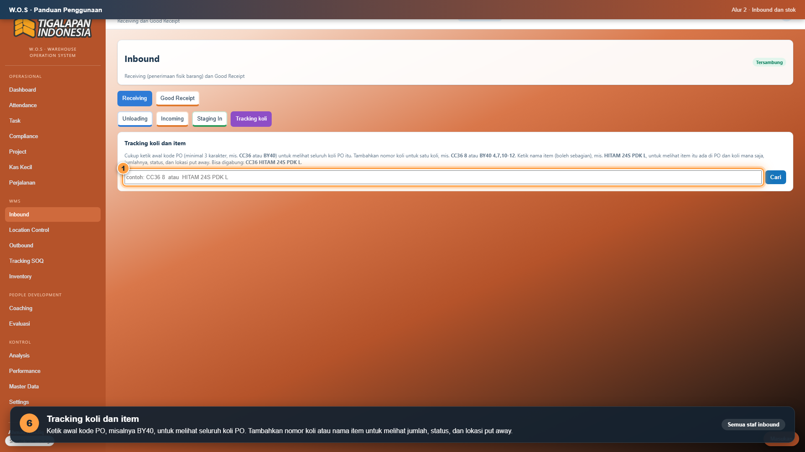
Tracking koli dan item
Ketik awal kode PO, misalnya BY40, untuk melihat seluruh koli PO. Tambahkan nomor koli atau nama item untuk melihat jumlah, status, dan lokasi put away.
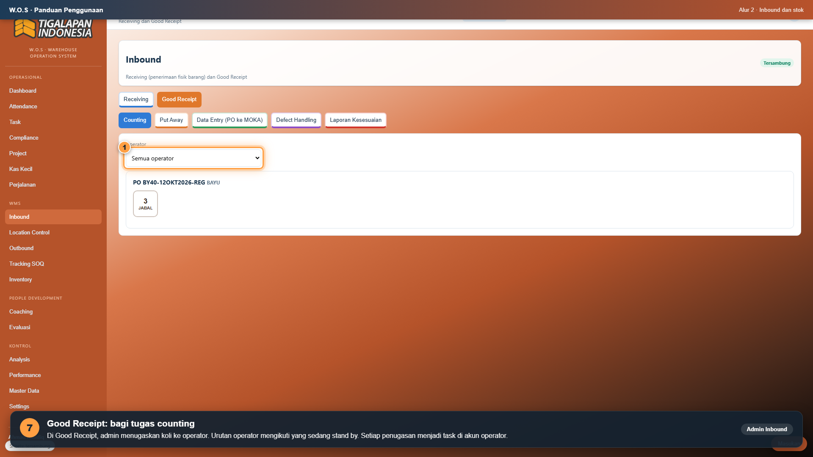
Good Receipt: bagi tugas counting
Di Good Receipt, admin menugaskan koli ke operator. Urutan operator mengikuti yang sedang stand by. Setiap penugasan menjadi task di akun operator.
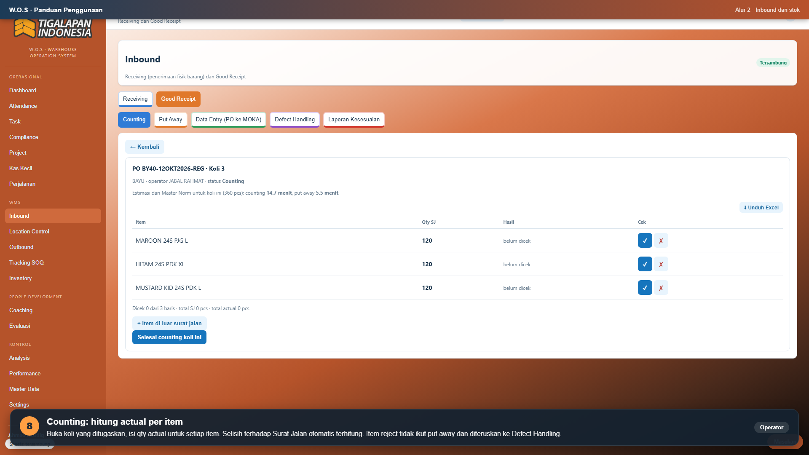
Counting: hitung actual per item
Buka koli yang ditugaskan, isi qty actual untuk setiap item. Selisih terhadap Surat Jalan otomatis terhitung. Item reject tidak ikut put away dan diteruskan ke Defect Handling.
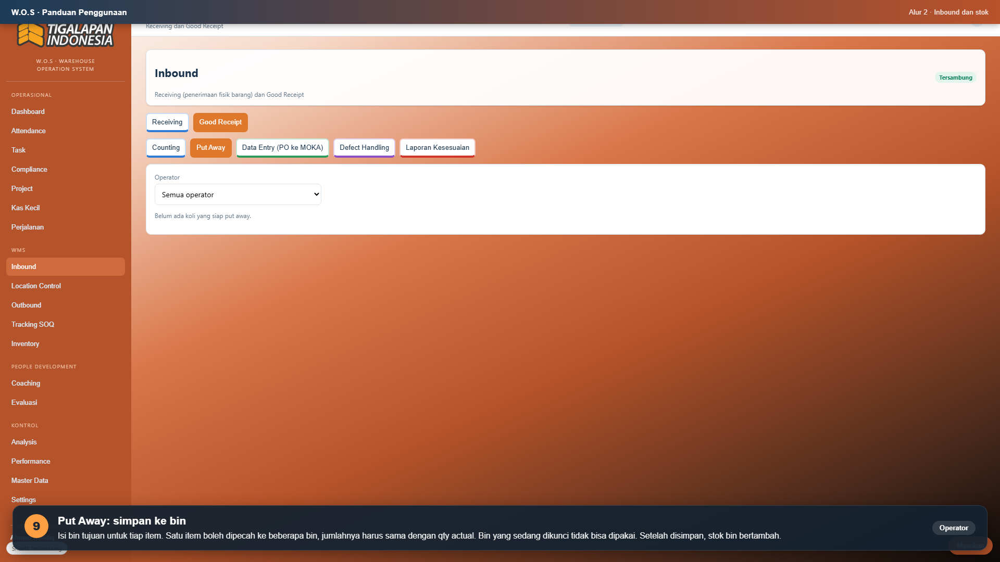
Put Away: simpan ke bin
Isi bin tujuan untuk tiap item. Satu item boleh dipecah ke beberapa bin, jumlahnya harus sama dengan qty actual. Bin yang sedang dikunci tidak bisa dipakai. Setelah disimpan, stok bin bertambah.
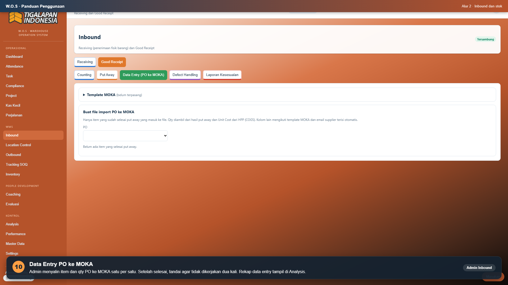
Data Entry PO ke MOKA
Admin menyalin item dan qty PO ke MOKA satu per satu. Setelah selesai, tandai agar tidak dikerjakan dua kali. Rekap data entry tampil di Analysis.
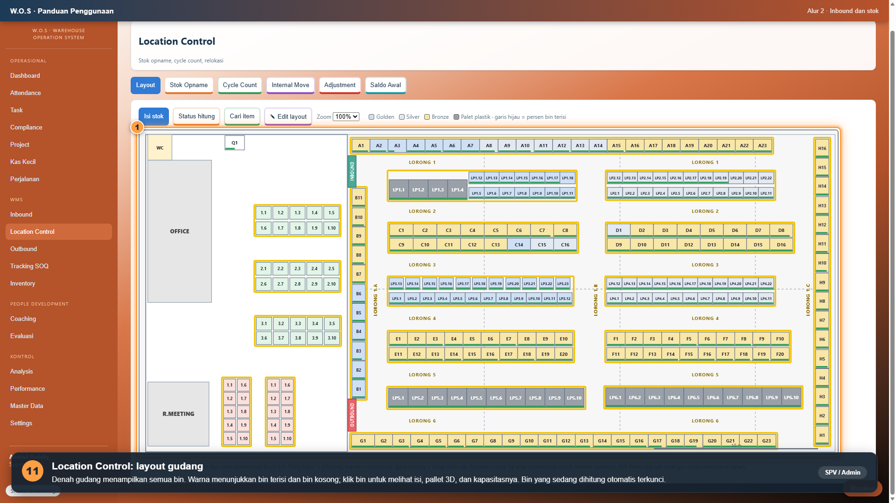
Location Control: layout gudang
Denah gudang menampilkan semua bin. Warna menunjukkan bin terisi dan bin kosong; klik bin untuk melihat isi, pallet 3D, dan kapasitasnya. Bin yang sedang dihitung otomatis terkunci.
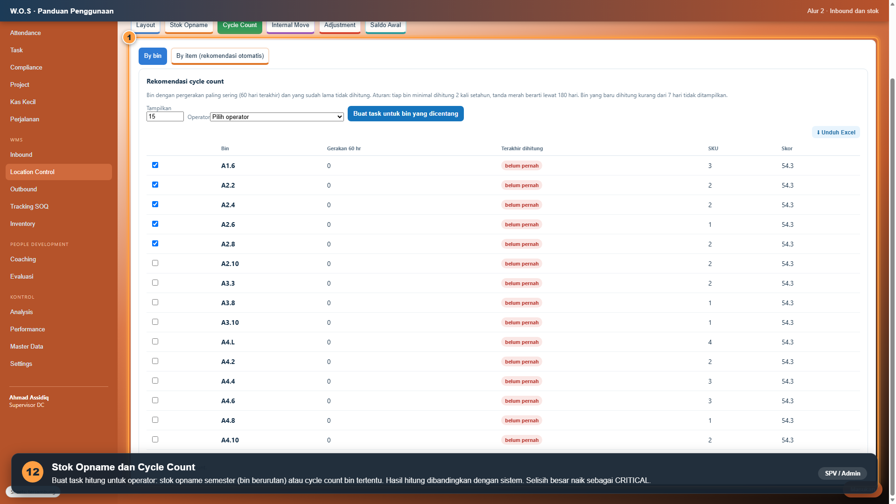
Stok Opname dan Cycle Count
Buat task hitung untuk operator: stok opname semester (bin berurutan) atau cycle count bin tertentu. Hasil hitung dibandingkan dengan sistem. Selisih besar naik sebagai CRITICAL.
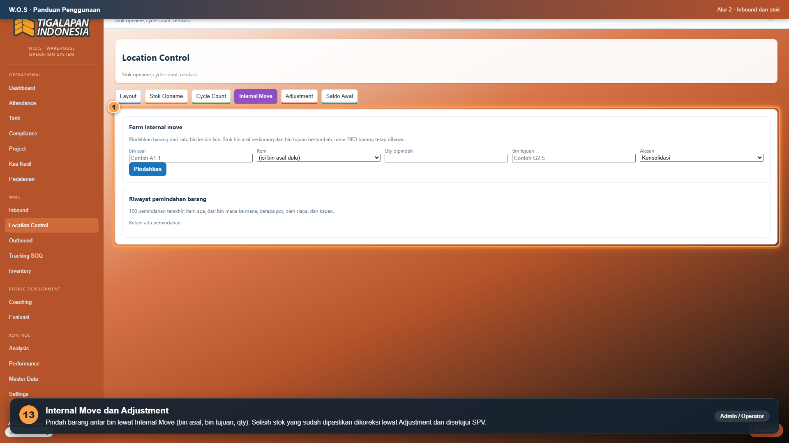
Internal Move dan Adjustment
Pindah barang antar bin lewat Internal Move (bin asal, bin tujuan, qty). Selisih stok yang sudah dipastikan dikoreksi lewat Adjustment dan disetujui SPV.
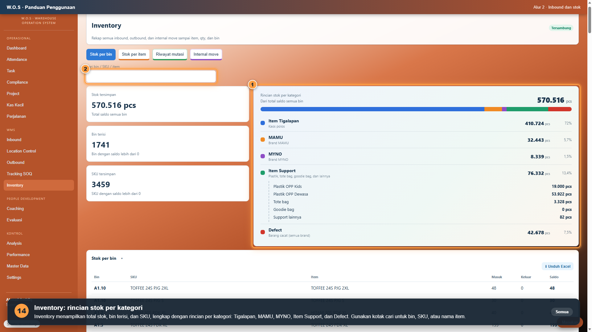
Inventory: rincian stok per kategori
Inventory menampilkan total stok, bin terisi, dan SKU, lengkap dengan rincian per kategori: Tigalapan, MAMU, MYNO, Item Support, dan Defect. Gunakan kotak cari untuk bin, SKU, atau nama item.
Alur 3 · Outbound
Urutan frame sesuai urutan kerja di lapangan.
Upload SOQ dan daftar dokumen
Buka Outbound > Picking List dan upload file Excel SOQ (nama file memuat kode shipment, outlet, dan tanggal). Sistem membaca item, mengelompokkan ke koli, dan admin menentukan picker.
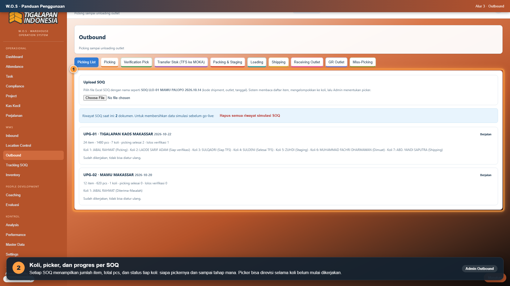
Koli, picker, dan progres per SOQ
Setiap SOQ menampilkan jumlah item, total pcs, dan status tiap koli: siapa pickernya dan sampai tahap mana. Picker bisa direvisi selama koli belum mulai dikerjakan.
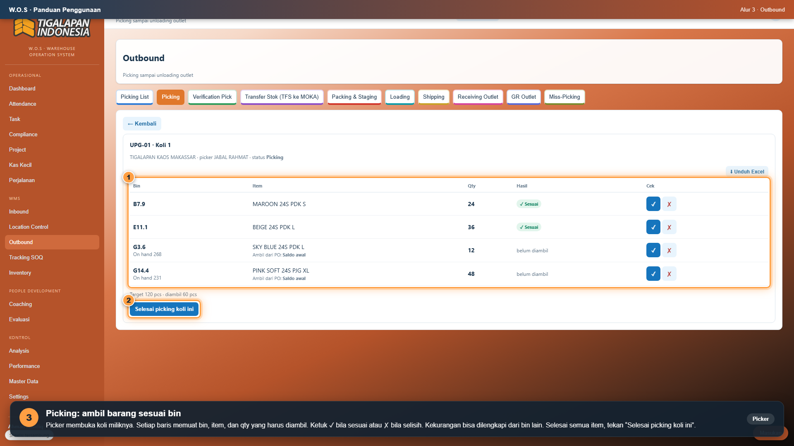
Picking: ambil barang sesuai bin
Picker membuka koli miliknya. Setiap baris memuat bin, item, dan qty yang harus diambil. Ketuk ✓ bila sesuai atau ✗ bila selisih. Kekurangan bisa dilengkapi dari bin lain. Selesai semua item, tekan “Selesai picking koli ini”.
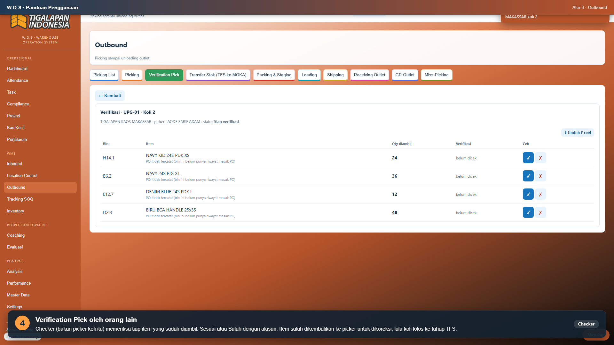
Verification Pick oleh orang lain
Checker (bukan picker koli itu) memeriksa tiap item yang sudah diambil: Sesuai atau Salah dengan alasan. Item salah dikembalikan ke picker untuk dikoreksi, lalu koli lolos ke tahap TFS.
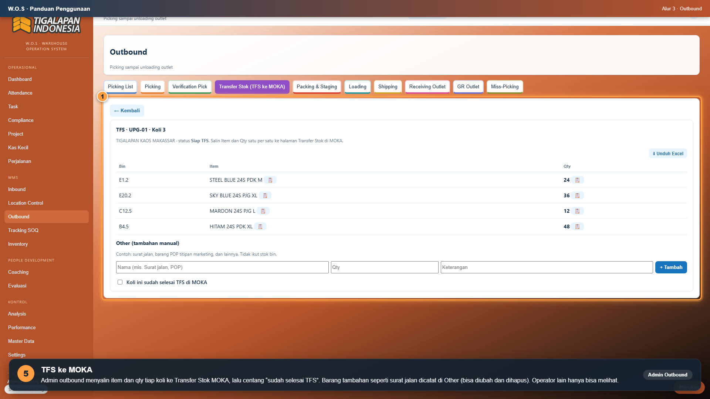
TFS ke MOKA
Admin outbound menyalin item dan qty tiap koli ke Transfer Stok MOKA, lalu centang “sudah selesai TFS”. Barang tambahan seperti surat jalan dicatat di Other (bisa diubah dan dihapus). Operator lain hanya bisa melihat.
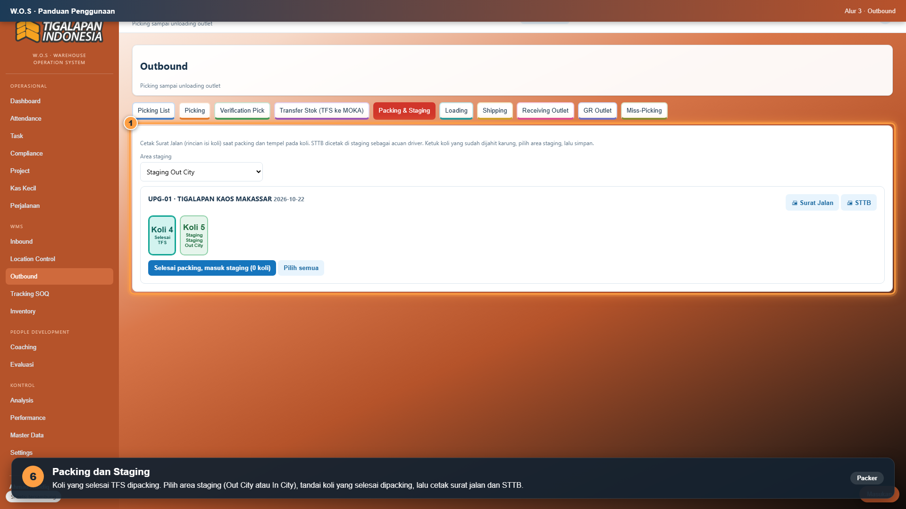
Packing dan Staging
Koli yang selesai TFS dipacking. Pilih area staging (Out City atau In City), tandai koli yang selesai dipacking, lalu cetak surat jalan dan STTB.
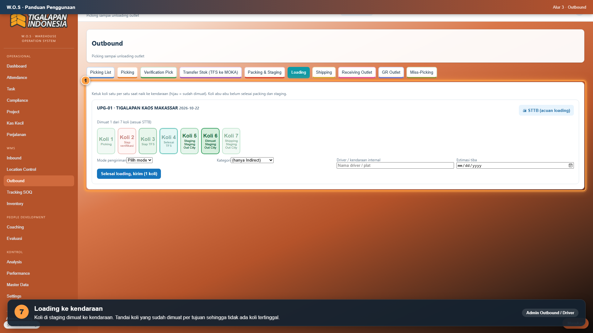
Loading ke kendaraan
Koli di staging dimuat ke kendaraan. Tandai koli yang sudah dimuat per tujuan sehingga tidak ada koli tertinggal.
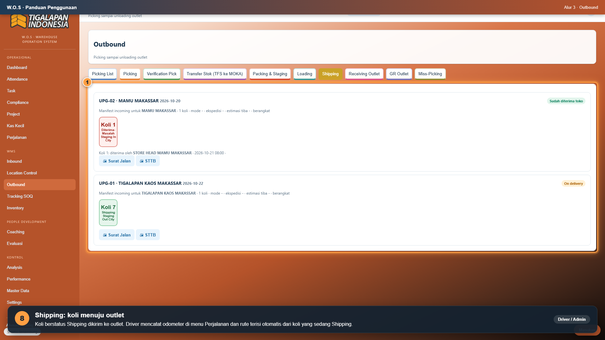
Shipping: koli menuju outlet
Koli berstatus Shipping dikirim ke outlet. Driver mencatat odometer di menu Perjalanan dan rute terisi otomatis dari koli yang sedang Shipping.
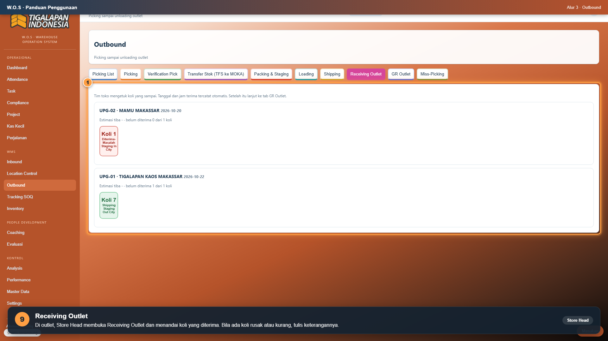
Receiving Outlet
Di outlet, Store Head membuka Receiving Outlet dan menandai koli yang diterima. Bila ada koli rusak atau kurang, tulis keterangannya.
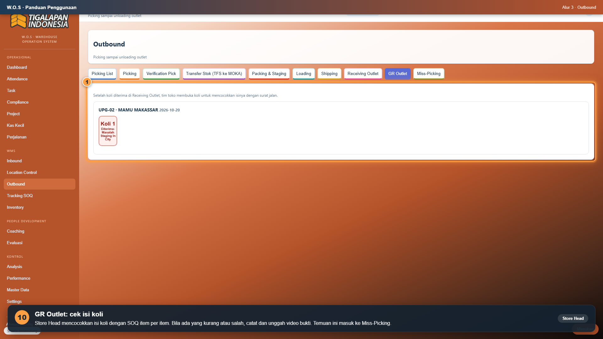
GR Outlet: cek isi koli
Store Head mencocokkan isi koli dengan SOQ item per item. Bila ada yang kurang atau salah, catat dan unggah video bukti. Temuan ini masuk ke Miss-Picking.
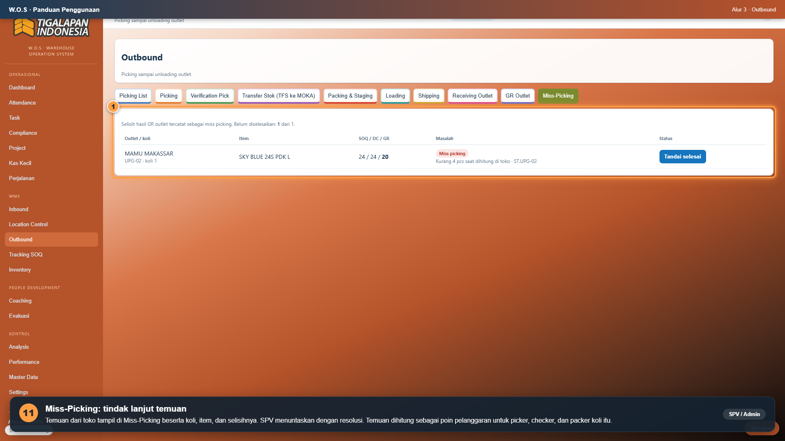
Miss-Picking: tindak lanjut temuan
Temuan dari toko tampil di Miss-Picking beserta koli, item, dan selisihnya. SPV menuntaskan dengan resolusi. Temuan dihitung sebagai poin pelanggaran untuk picker, checker, dan packer koli itu.
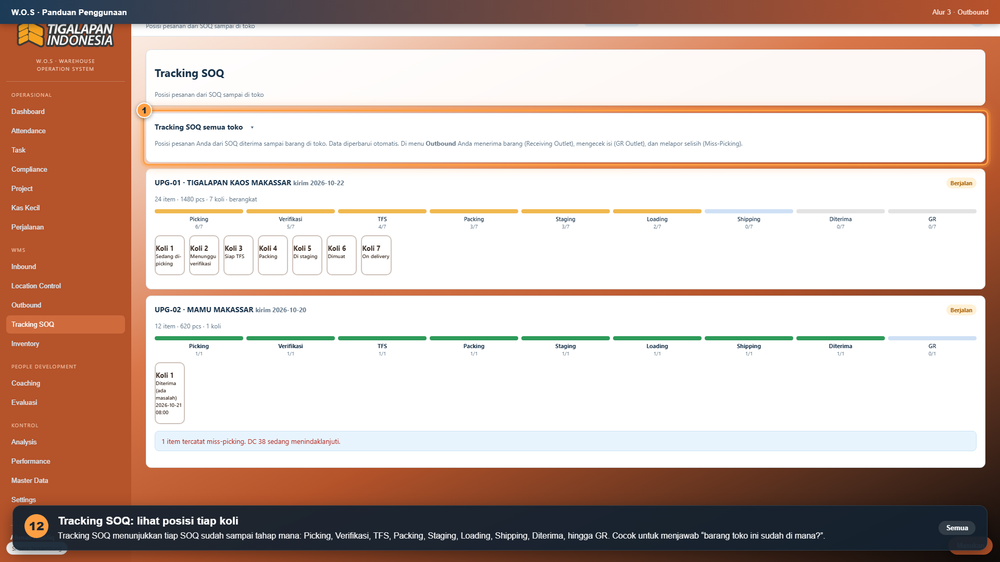
Tracking SOQ: lihat posisi tiap koli
Tracking SOQ menunjukkan tiap SOQ sudah sampai tahap mana: Picking, Verifikasi, TFS, Packing, Staging, Loading, Shipping, Diterima, hingga GR. Cocok untuk menjawab “barang toko ini sudah di mana?”.